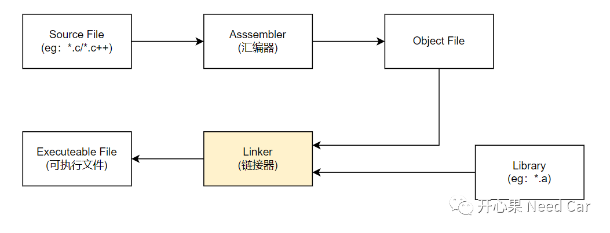
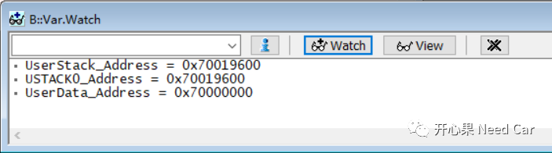
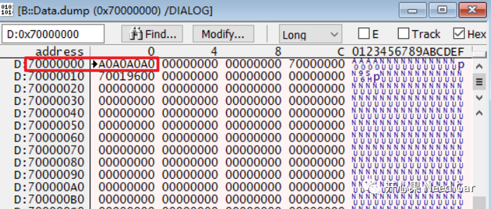
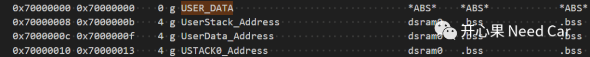
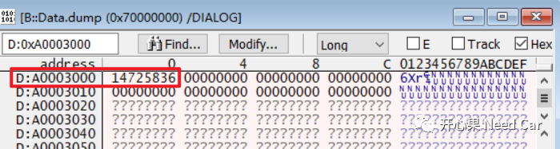

开心果 Need Car · 2023-06-01T13:08:00+08:00 · 微信原文
在阅读工程代码时，大家是否产生过这样的困惑：这个变量明明在源文件中没有定义，但是却声明为外部变量，如何理解呢？如下所示：
/*Start: Common definitions ****************//**< center of A0 addressable area */ \extern unsigned int __A0_MEM[]; \/**< center of A1 addressable area */ \extern unsigned int __A1_MEM[]; \/**< center of A8 addressable area */ \extern unsigned int __A8_MEM[]; \/**< center of A9 addressable area */ \extern unsigned int __A9_MEM[];/*End: Common definitions *****************//*C extern defintions *//**< user stack end */ \extern unsigned int __USTACK/**< interrupt stack end */ \extern unsigned int __ISTACK/**< Interrupt vector table */ \extern unsigned int __INTTAB_CPU/**< trap table */ \extern unsigned int __TRAPTAB_CPU/**< context save area 1 begin */ \extern unsigned int __CSA/**< context save area 1 begin */ \extern unsigned int __CSA
extern unsigned int __ISTACK0[];1、链接器与链接符号
找到问题答案之前，先回顾一下链接器（Linker）的作用。百度百科对GNU链接器的解释如下：“GNU的链接器称为ld，它负责把若干目标文件与若干库文件链接起来，并重定位它们的数据位置。在编译一个程序时，最后一步就是运行ld命令，通常ld直接由gcc负责调用，对用户程序员透明。ld能接受链接描述文件的控制，这是一种用链接命令语言（LinkerScript）写成的控制文件，用来在链接的整个过程中提供显式的、全局的控制。ld比其他链接器更有用的地方在于它提供了诊断信息。许多链接器在碰到错误的时候立即放弃执行，但ld却能够继续执行，让程序员发现其他的错误，或者在某些情况下，产生一个带有错误信息的输出文件。”链接器作用如下所示：

2、C文件中如何使用链接文件中Symbol
（一）链接文件中定义符号
以Hightec对应的链接文件为例（*.lsl），定义符号：USER_DATA、userStack、__USTACK0等，如下所示：
USER_DATA = 0x70000000;SECTIONS{......CORE_SEC(.ustack) (LCF_DSPR0_START + LCF_USTACK0_OFFSET):{PROVIDE(__USTACK0_END = .);. = . + LCF_USTACK0_SIZE;userStack = .;PROVIDE(__USTACK0 = .);} > dsram0......}
（二）在源文件中引用链接文件中的符号
在链接文件中定义符号后，即可在源文件中进行外部声明，进而获取符号指定的地址，示例如下：
......uint32 USTACK0_Address = 0x00;uint32 UserData_Address = 0x00;uint32 UserStack_Address = 0x00;extern unsigned int __USTACK0[];extern unsigned int USER_DATA[];extern unsigned int userStack[];int core0_main (void){......USTACK0_Address = __USTACK0;UserData_Address = USER_DATA;UserStack_Address = userStack;while(1){}}

3、拓展思考
USER_DATA = 0x70000000;源文件在指定地址（0x70000000）进行写操作，如下所示：
......extern unsigned int USER_DATA[];int core0_main (void){......*((uint32*)USER_DATA) = 0xA0A0A0A0;while(1){}}


示例2：将某个固定值（eg:0x14725836）写到PFlash指定地址（eg:0xA0003000），如何操作呢？
1、在源文件中自定义段（eg：.SoftwareVersion），在自定义段中定义常量（eg:APP_SOFVER = 0x14725836），如下所示：
const uint32 APP_SOFVER = 0x14725836;
.UserStoreInfo (0xA0003000) :FLAGS (rxl){KEEP(*(.SoftwareVersion));}> pfls0_nc

往期精彩回顾
Bootloader开发：为什么需要SBL（Secondary Bootloader）?
Autosar EcuM：APP由RUN到POST_RUN浅析